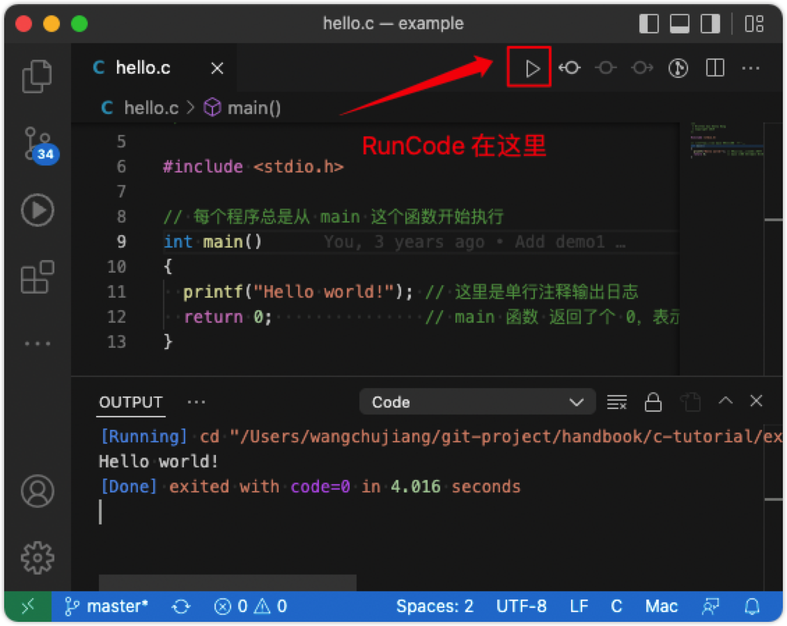

开始使用 C
要开始使用 C，您需要做两件事：
- 用于编写 C 代码的文本编辑器，如记事本
- 编译器，如 GCC，将 C 代码翻译成计算机可以理解的语言
有许多文本编辑器和编译器可供选择。 我们介绍几种编辑器和编译环境（见下文）。
注意 ⚠️ ：Linux 和 Mac 系统可以直接安装 GCC，Windows 系统可以安装 MinGW。
编辑器
Visual Studio Code

VSCode 下载安装地址：https://code.visualstudio.com
下载安装好 VSCode 后，我们需要安装下面两个插件更方便的支持 C 语言环境。
Sublime Text 3
Sublime Text 下载安装地址：https://www.sublimetext.com
C 快速入门
如果您不理解下面的代码，请不要担心 —— 我们将在后面的章节中详细讨论。 现在，专注于如何运行代码。
创建第一个程序
让我们创建我们的第一个 C 文件。
打开编辑器选择菜单 File > New File 创建一个空的文本文件。
编写以下 C 代码并将文件另存为 hello.c（File > Save As）：
#include <stdio.h>
int main() {
printf("Hello World!");
return 0;
}
编辑器编译运行
在 Visual Studio Code 中，它应该如下所示：

然后，点击 Run Code 以运行（执行）程序。 结果看起来像这样：
[Running] cd "/Users/c-tutorial/example/" && gcc hello.c -o hello && "/Users/c-tutorial/example/"hello
Hello world!
[Done] exited with code=0 in 4.016 seconds
在 Sublime Text 3 中，运行比较简单，打开 hello.c 文件，Tool > Build 选择 C Single File - Run，它应该如下所示：
命令行编译运行
通过命令行进入 hello.c 所在目录
cd /Users/c-tutorial/example
使用 gcc 编译 hello.c 文件，
$ gcc -o hello hello.c
运行成功之后会在当前目录下看到 hello 文件，直接在命令后输入 ./hello 命令，您将得到如下输出结果：
Hello World
Docker 运行环境
可以简单用 Docker 来安装编译环境，这样在 Windows、MacOS、Linux 下都可以拥有完全相同的编译环境。
镜像基于 Alpine Linux 镜像，只有 5MB 镜像，并且包含 C/C++ 编译器（gcc/g++ 包）
- 安装 Docker
- 使用 docker pull 命令
docker pull frolvlad/alpine-gxx - 创建 Dockerfile 文件
FROM alpine:3.14 RUN apk add --no-cache gcc musl-dev RUN apk add --no-cache g++ - 生成本地镜像
docker build -t myalpine . - 运行映像，把当前路径（$PWD）映射至容器的 /test 目录，用 gcc 编译程序，exit返回：
docker run -it -v$PWD:/test myalpine root@b1a38bd7107a:/# cd test root@b1a38bd7107a:/test# gcc -o hello hello.c Hello World root@b1a38bd7107a:/test# exit exit